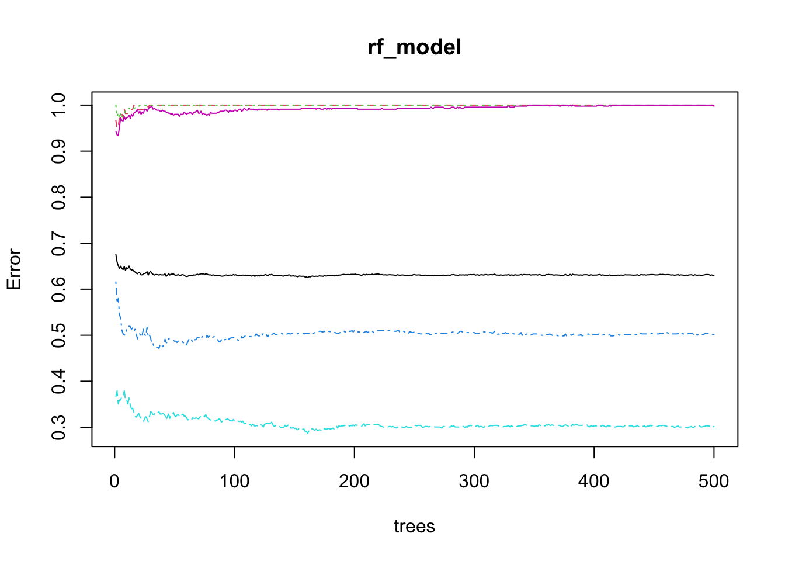
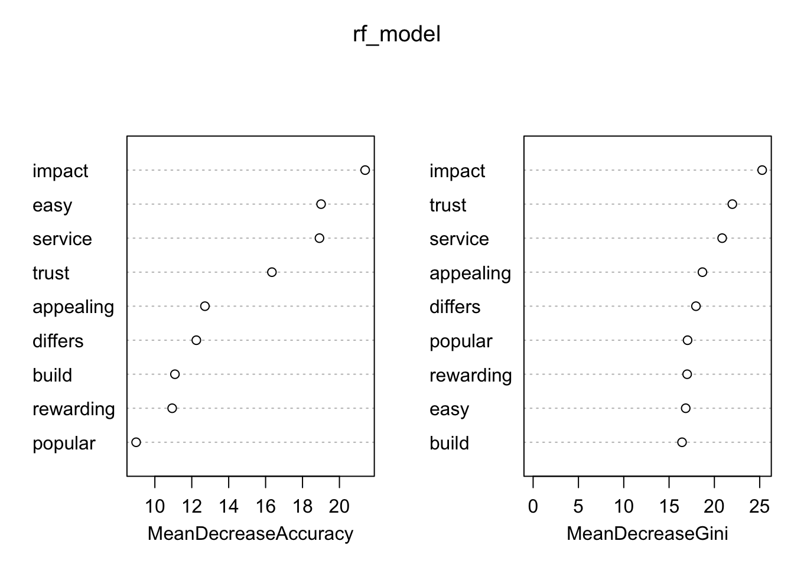

Key Drivers Analysis
This post implements a few measure of variable importance, interpreted as a key drivers analysis, for certain aspects of a payment card on customer satisfaction with that payment card.

| Usefulness | Mean_Decrease_Gini | Shapley_Values | Standardized_Coefficients | Pearson_Correlation | |
|---|---|---|---|---|---|
| trust | 0.0216111 | 21.98128 | 0 | 0.4231501 | 0.2557055 |
| build | 0.0071913 | 16.43194 | 0 | 0.0857640 | 0.1918957 |
| differs | 0.0072914 | 17.96659 | 0 | 0.1535754 | 0.1848009 |
| easy | 0.0092876 | 16.83768 | 0 | 0.0672460 | 0.2129847 |
| appealing | 0.0091606 | 18.68260 | 0 | 0.0970753 | 0.2079965 |
| rewarding | 0.0068401 | 16.99447 | 0 | 0.0622599 | 0.1945615 |
| popular | 0.0056425 | 17.03995 | 0 | 0.0714742 | 0.1714253 |
| service | 0.0184053 | 20.85790 | 0 | 0.3324903 | 0.2510982 |
| impact | 0.0235822 | 25.27092 | 0 | 0.5542286 | 0.2545386 |
The analysis of the dataset aimed to identify the key drivers of customer satisfaction using various statistical and machine learning techniques. The predictors included trust, build, differs, easy, appealing, rewarding, popular, service, and impact. Among these, trust and impact emerged as the most significant predictors across multiple metrics. Trust showed the highest Pearson correlation (0.2557) and a strong standardized coefficient (0.4232), indicating a robust linear relationship and significant influence on satisfaction. Impact also demonstrated high importance with the highest standardized coefficient (0.5542) and the highest mean decrease in Gini (25.3324) from the random forest model, underscoring its critical role in reducing model uncertainty. In terms of usefulness, which measures relative contribution to model performance, impact (0.0236) and trust (0.0216) again ranked highest. Conversely, predictors such as popular, rewarding, and build showed relatively lower importance across all metrics.
Interestingly, the Shapley values, intended to measure the average marginal contribution of each predictor, were zero for all variables, suggesting potential issues with the model’s complexity or the data quality. This anomaly indicates the need for further investigation into the Shapley value calculation or the model’s capability to capture predictor contributions. Overall, trust and impact consistently stood out as the primary drivers of customer satisfaction in the dataset, highlighting areas where strategic improvements could be most beneficial
| XGBoost_Importance | |
|---|---|
| trust | 0.2793983 |
| build | 0.0734265 |
| differs | 0.0585575 |
| easy | 0.0703501 |
| appealing | 0.0606389 |
| rewarding | 0.0708004 |
| popular | 0.0651801 |
| service | 0.1503828 |
| impact | 0.1712655 |
The XGBoost model further confirmed these findings, with trust (0.2794) and impact (0.1713) having the highest importance scores, reinforcing their critical roles in influencing customer satisfaction.